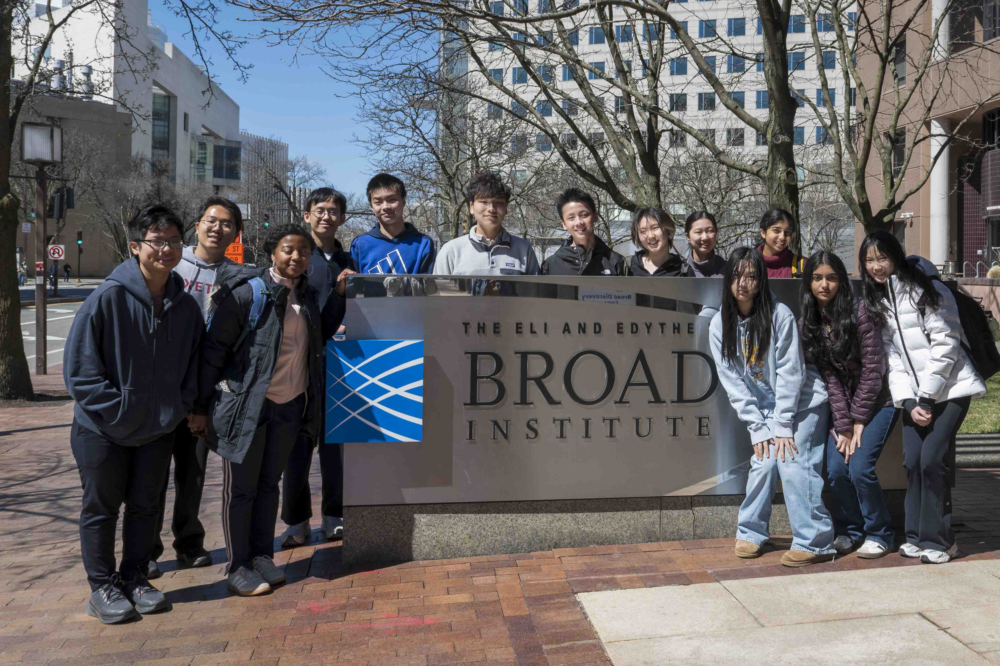

Exeter Biology
Symposium
Free dry-lab research symposium for middle and high school students.
- When
- Spring 2027Exact date to be confirmed
- Where
- Phillips Exeter AcademyIn person and online
- Who can take part
- All middle and high school students

Take part in student research
Investigate a biological question using published research or public data. Dry-lab research needs a computer and an internet connection, rather than access to a laboratory. Share your work with other students and experienced researchers.
For students
Find a question, learn the tools, and prepare a research poster. No prior research experience required.
For schools
Bring EBS to your classroom or share the opportunity with interested students. The EBS team and volunteer network provide support.
For judges and volunteers
Guest speak, judge presentations, or review resources for student researchers.
Provisional timeline
All dates are tentative and subject to change. Register your interest to receive updates.
- Fall 2026
- Registration and resources
Student registration and interest forms open. Resource library access begins.
- March 2027
- Abstract submissions
Registered participants submit research abstracts for review.
- April 2027
- Acceptance notifications
Participants receive abstract decisions and presentation format assignments.
- Spring 2027
- Symposium day
Present in person at Phillips Exeter Academy or online. Exact date to be confirmed.
Research guides
Start with a research question, then choose the tools that fit your project.
Organized by students at Exeter
The Exeter Genetics and Biotech Club founded EBS after seeing curious students who wanted to try biology research but did not know where to start. The symposium provides a structured introduction to dry-lab research and scientific communication, with a community of peers and professionals.